<style>
  section {
    position: relative;
  }
  .background {
    position: absolute;
    left: 0;
    right: 0;
    top: 0;
    bottom: 0;
    z-index: -1;
  }
  #aplique .background {
    background: linear-gradient(180deg, #EDF7FF 55.2%, #FCFEFF 100%, #FFFFFF 100%);
  }
  #adote .background {
    background: linear-gradient(to top, rgba(219, 246, 237, 0.44) 12.62%, #FBFFFE 77.23%);
  }
  #padronizacao .background {
    background: linear-gradient(to top, rgba(219, 246, 237, 0.44) 12.62%, #FBFFFE 77.23%);
  }
  #quem .background {
    background: linear-gradient(180deg, #EDF7FF 12.62%, #FFFFFF 77.23%);
    transform: matrix(-1, 0, 0, 1, 0, 0);
  }
  #duvidas .background {
    background: linear-gradient(180deg, rgba(219, 246, 237, 0.44) 12.62%, #FBFFFE 77.23%);
  }
</style>

<section id="intro" class="pb-3 pb-sm-5">
  <h2 class="text-center text-up-05 text-sm-up-07 text-weight-light">
    Veja como adequar a sua solução
    <br class="d-none d-sm-block">
    ao Padrão Visual digital de governo
  </h2>
  <p class="text-center text-up-01 text-sm-up-03 text-weight-light">
    Observe abaixo alguns pontos de aderência mínima para adequar sua interface
    <br class="d-none d-sm-block">
    ao Design System.
  </p>
</section>

<section id="exemplos" class="pb-5">
  <h2 class="text-up-05 text-sm-up-07 text-weight-light">
    Aplicativos
  </h2>
  <h3 class="text-up-04 text-sm-up-05 text-weight-light">
    Barra Padrão para Aplicativos
  </h3>
  <p class="text-up-01 text-weight-light">
    Reforça e padroniza a identidade visual
    <br class="d-none d-sm-block">
    de Governo nos aplicativos.
  </p>
  <div class="d-none text-center d-sm-block p-5">
    
  </div>
  <div class="d-sm-none text-center py-5">
    
  </div>

  <h2 class="text-up-05 text-sm-up-07 text-weight-light">
    Web Responsivo
  </h2>
  <p class="d-sm-none text-up-01 text-weight-light">
    A identidade visual do Governo aplicada em diversos dispositivos.
  </p>
  <ol class="text-up-02 text-semi-bold py-5">
    <li>Cabeçalho</li>
    <li>Logo Gov.br</li>
    <li>Barra Padrão para Aplicativos</li>
    <li>Rodapé</li>
    <li>Tipografia Rawline</li>
    <li>Paleta de Cores</li>
    <li>Botões</li>
  </ol>
  <div class="d-none d-sm-block text-center px-5">
    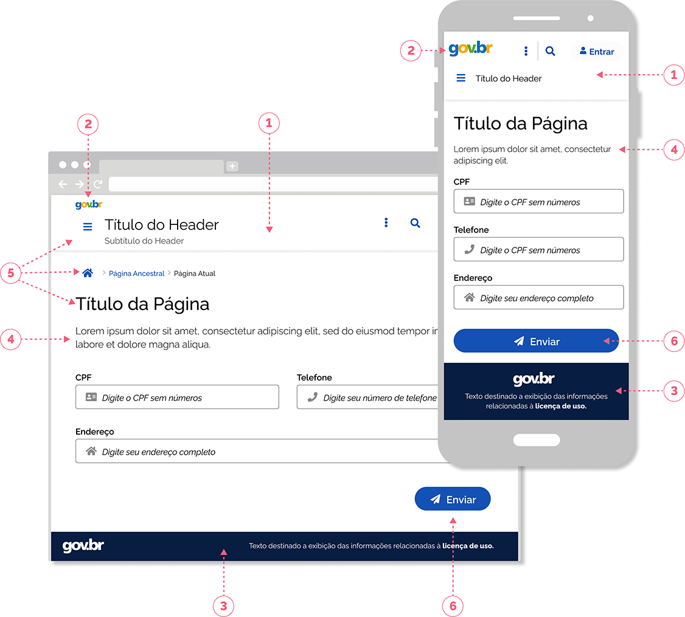
  </div>
  <div class="d-sm-none text-center pb-5">
    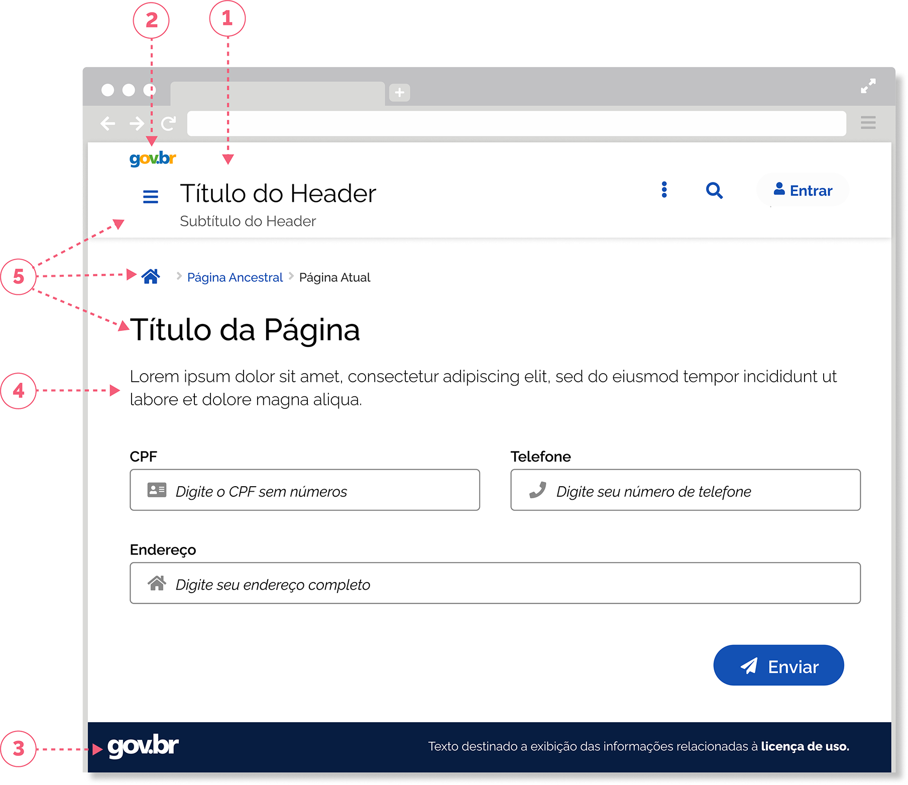
  </div>
  <div class="d-sm-none text-center pt-5">
    
  </div>
</section>

<section id="adote" class="mx-n1 mx-sm-n6 px-1 px-sm-5 py-5">
  <div class="background"></div>
  <h2 class="text-up-05 text-sm-up-07 text-weight-light">
    Adote as boas práticas para criar formulários
  </h2>
  <ul class="text-up-02 text-sm-up-05 text-weight-semi-bold">
    <li>Trabalhe a semântica de forma eficiente</li>
    <li>Ordene os botões de ação</li>
    <li>Organize os campos</li>
  </ul>
  <div class="d-none d-sm-block text-center p-sm-5">
    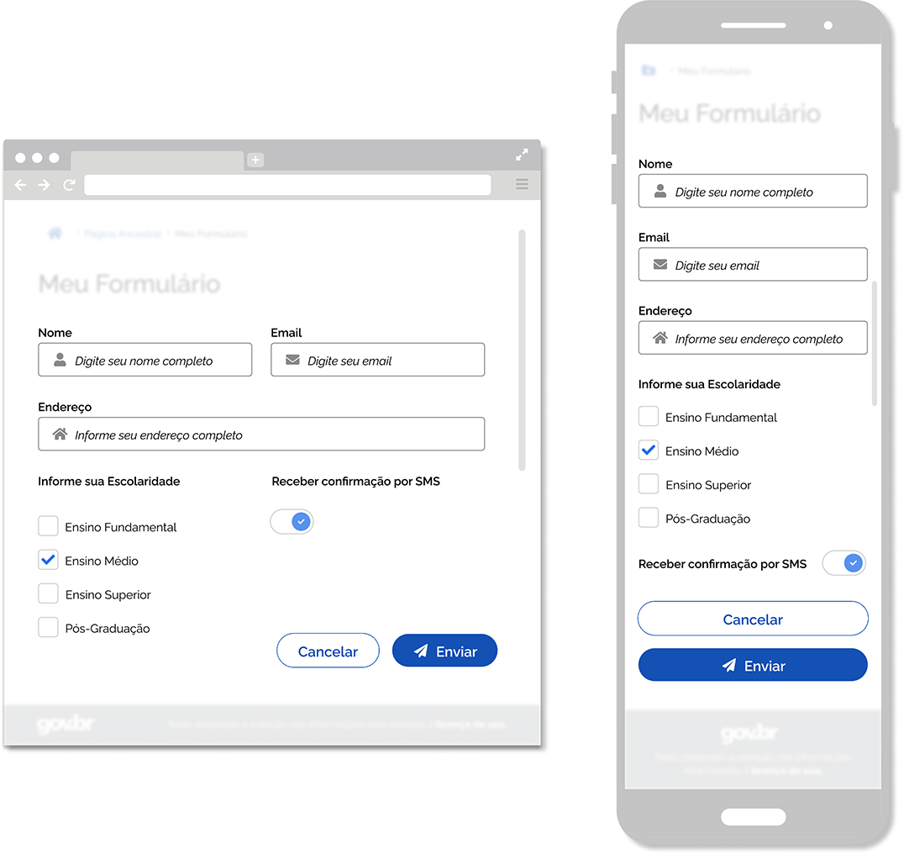
  </div>
  <div class="d-sm-none text-center py-5">
    
  </div>
  <div class="text-center py-5">
    <a class="br-button secondary" href="/padroes/formulario">
      <i class="fas fa-list" aria-hidden="true"></i>
      <span class="ml-2">Aprenda mais sobre formulários</span>
    </a>
  </div>
</section>

<section id="aplique" class="mx-n1 mx-sm-n6 px-1 px-sm-5 py-5">
  <div class="background"></div>
  <h2 class="text-up-05 text-sm-up-07 text-weight-light pb-sm-5">
    Aplique os fundamentos visuais mínimos
  </h2>

  <h3 class="text-up-04 text-sm-up-07 text-weight-light">
    Fundamentos
    <br>
    Aplicados
  </h3>
  <div class="d-none d-sm-block text-center py-5 p-sm-5">
    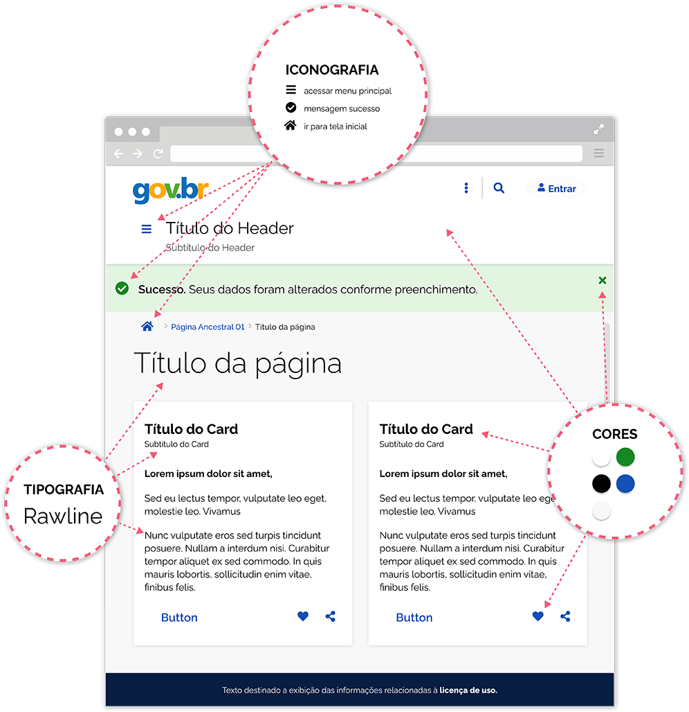
  </div>
  <div class="d-sm-none text-center py-5 p-sm-5">
    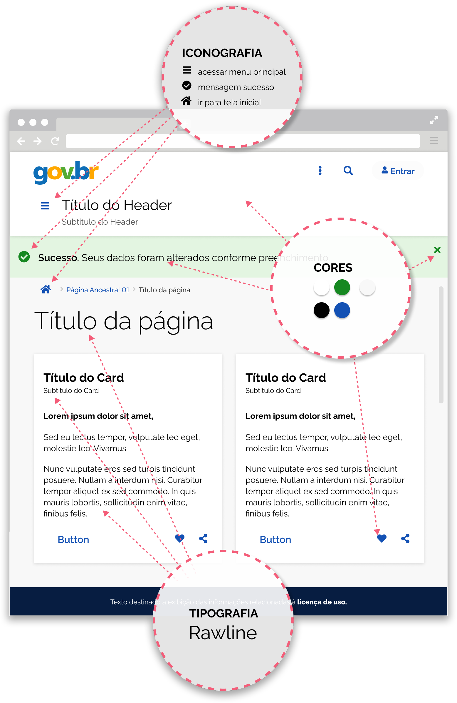
  </div>

  <h3 class="text-up-04 text-sm-up-07 text-weight-light pt-sm-5">
    Cores
  </h3>
  <p class="text-up-01 text-lg-up-03">
    Utilize as cores baseando-se em suas funções:
  </p>
  <div class="text-center py-5 p-sm-5">
    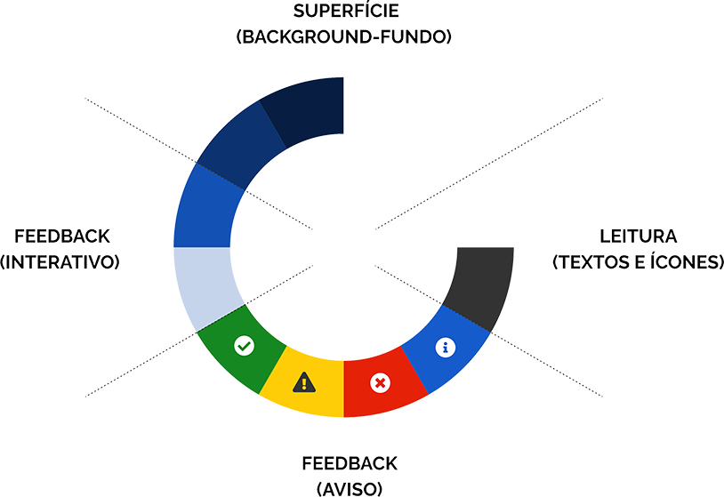
  </div>
  <ol class="sr-only">
    <li>Superfície (background/fundo)</li>
    <li>Feedback (interativo)</li>
    <li>Feedback (aviso)</li>
    <li>Leitura (textos e ícones)</li>
  </ol>
  <div class="text-center py-5">
    <a class="br-button secondary" href="/fundamentos-visuais/cores">
      <i class="fas fa-arrow-right" aria-hidden="true"></i>
      <span class="ml-2">Conheça Cores</span>
    </a>
  </div>

  <hr>

  <h3 class="text-up-04 text-sm-up-07 text-weight-light">
    Tipografia
  </h3>
  <p class="text-up-01 text-lg-up-03 pb-5">
    Utilize a família tipografica <strong>Rawline</strong> com suas variações de peso e estilo.
  </p>
  <div class="d-none d-sm-block text-center py-5">
    
  </div>
  <div class="d-sm-none text-center pb-5">
    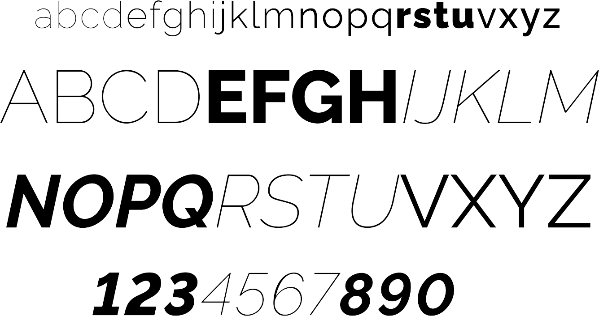
  </div>
  <div class="text-center py-5">
    <a class="br-button secondary" href="/fundamentos-visuais/tipografia">
      <i class="fas fa-arrow-right" aria-hidden="true"></i>
      <span class="ml-2">Conheça Tipografia</span>
    </a>
  </div>

  <hr>

  <h3 class="text-up-04 text-sm-up-07 text-weight-light">
    Iconografia
  </h3>
  <p class="text-up-01 text-lg-up-03 pb-5">
    Ao utilizar ícones, siga nossas <strong>Orientações de Uso</strong>, para guiar em suas representações visuais!
  </p>
  <div class="d-none d-sm-block text-center p-sm-5">
    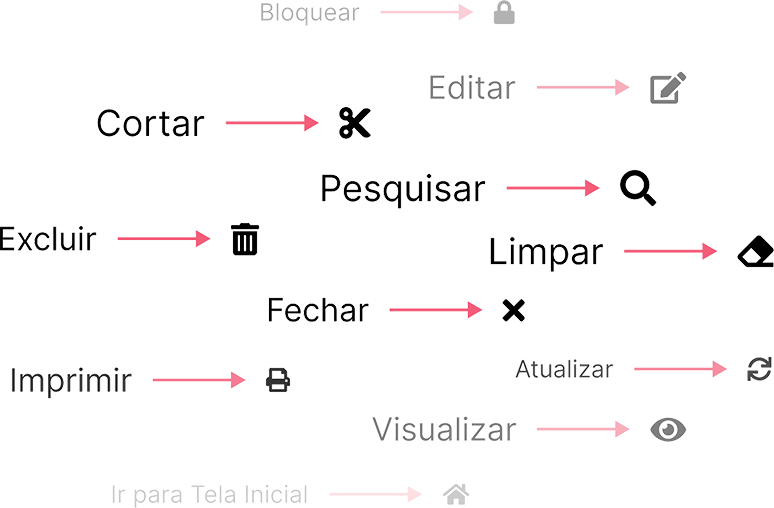
  </div>
  <div class="d-sm-none text-center p-5">
    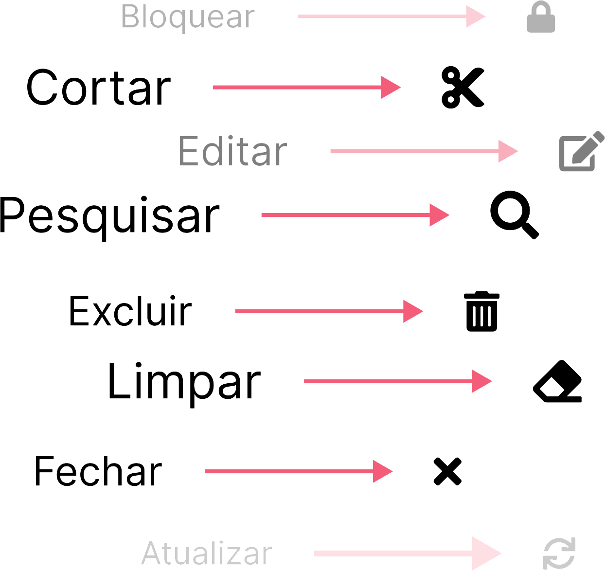
  </div>
  <ul class="sr-only">
    <li>Bloquear: cadeado</li>
    <li>Editar: lápis sobre documento</li>
    <li>Cortar: tesoura</li>
    <li>Pesquisar: lupa</li>
    <li>Excluir: lixeira</li>
    <li>Limpar: borracha</li>
    <li>Fechar: "x"</li>
    <li>Imprimir: impressora</li>
    <li>Atualizar: setas em sentido horário</li>
    <li>Visualizar: olho</li>
    <li>Ir para tela inicial: casa</li>
  </ul>
  <div class="text-center py-5">
    <a class="br-button secondary" href="/fundamentos-visuais/iconografia">
      <i class="fas fa-arrow-right" aria-hidden="true"></i>
      <span class="ml-2">Conheça Iconografia</span>
    </a>
  </div>
</section>

<section id="padronizacao" class="mx-n1 mx-sm-n6 px-1 px-sm-5 py-5">
  <div class="background"></div>
  <h2 class="text-up-05 text-sm-up-07 text-weight-light">
    Para facilitar a padronização, Utilize os
    <br class="d-none d-sm-block">
    componentes já disponíveis no Design System
  </h2>
  <p class="text-up-02 text-sm-up-05 text-weight-semi-bold pb-5">
    Reforce a identidade visual com o conteúdo, utilizando
    <br class="d-none d-sm-block">
    os componentes essenciais.
  </p>

  <h3 class="text-up-04 text-sm-up-07 text-weight-light py-sm-5">
    Cabeçalho e Rodapé
  </h3>
  <p class="text-up-01 text-sm-up-03">
    O cabeçalho ajuda a identificar seu produto/serviço e auxilia o usuário no acesso ou mesmo execução das funcionalidades
    principais; Já o rodapé ajuda na localização do usuário dentro da interface e apresenta informações complementares;
  </p>
  <div class="d-none d-sm-block text-center p-5">
    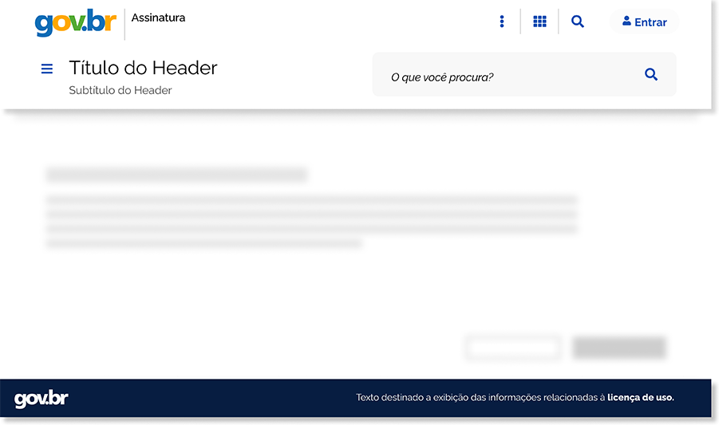
  </div>
  <div class="row justify-content-between text-center text-sm-left py-5">
    <div class="col-sm-auto pb-5 pb-sm-0">
      <a class="br-button secondary" href="/components/header">
        <i class="fas fa-arrow-right" aria-hidden="true"></i>
        <span class="ml-2">Conheça o Cabeçalho</span>
      </a>
    </div>
    <div class="col-sm-auto d-sm-none py-5">
      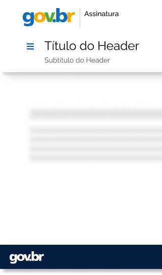
    </div>
    <div class="col-sm-auto pt-5 pt-sm-0">
      <a class="br-button secondary" href="/components/footer">
        <i class="fas fa-arrow-right" aria-hidden="true"></i>
        <span class="ml-2">Conheça o Rodapé</span>
      </a>
    </div>
  </div>

  <hr class="pt-5">

  <h3 class="text-up-04 text-sm-up-07 text-weight-light">
    Botões
  </h3>
  <p class="text-up-01 text-sm-up-03">
    Gera hierarquia para ações gerais ou de navegação pela interface;
  </p>
  <div class="d-none d-sm-block text-center p-5">
    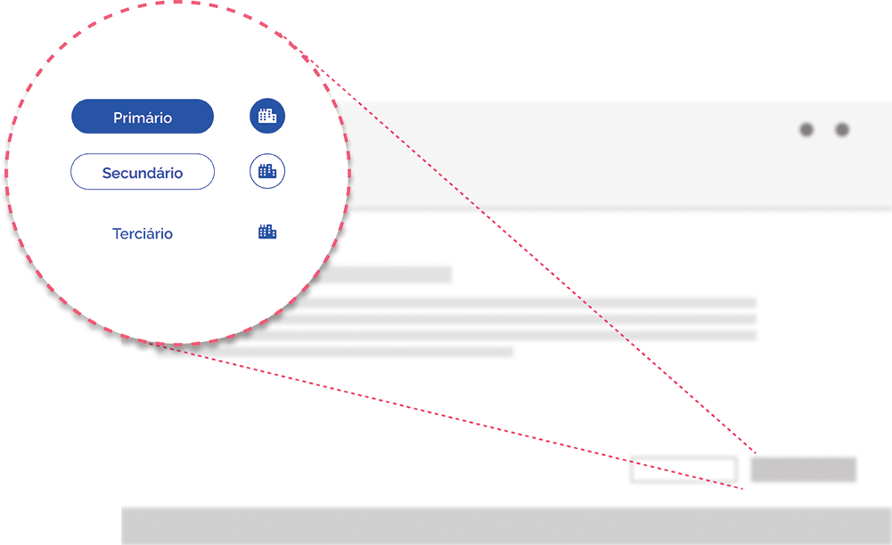
  </div>
  <div class="d-sm-none text-center p-5">
    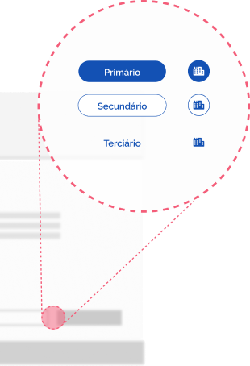
  </div>
  <div class="text-center py-5">
    <a class="br-button secondary" href="/components/button">
      <i class="fas fa-arrow-right" aria-hidden="true"></i>
      <span class="ml-2">Conheça os Botões</span>
    </a>
  </div>

  <hr class="pt-5">

  <h3 class="text-up-04 text-sm-up-07 text-weight-light">
    Sign-In
  </h3>
  <p class="text-up-01 text-sm-up-03">
    Padroniza a ação de autenticação do usuário
  </p>
  <div class="d-none d-sm-block text-center p-5">
    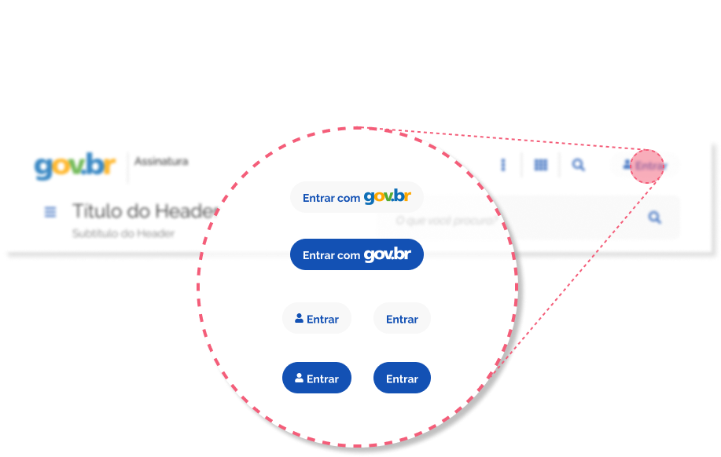
  </div>
  <div class="d-sm-none text-center p-5">
    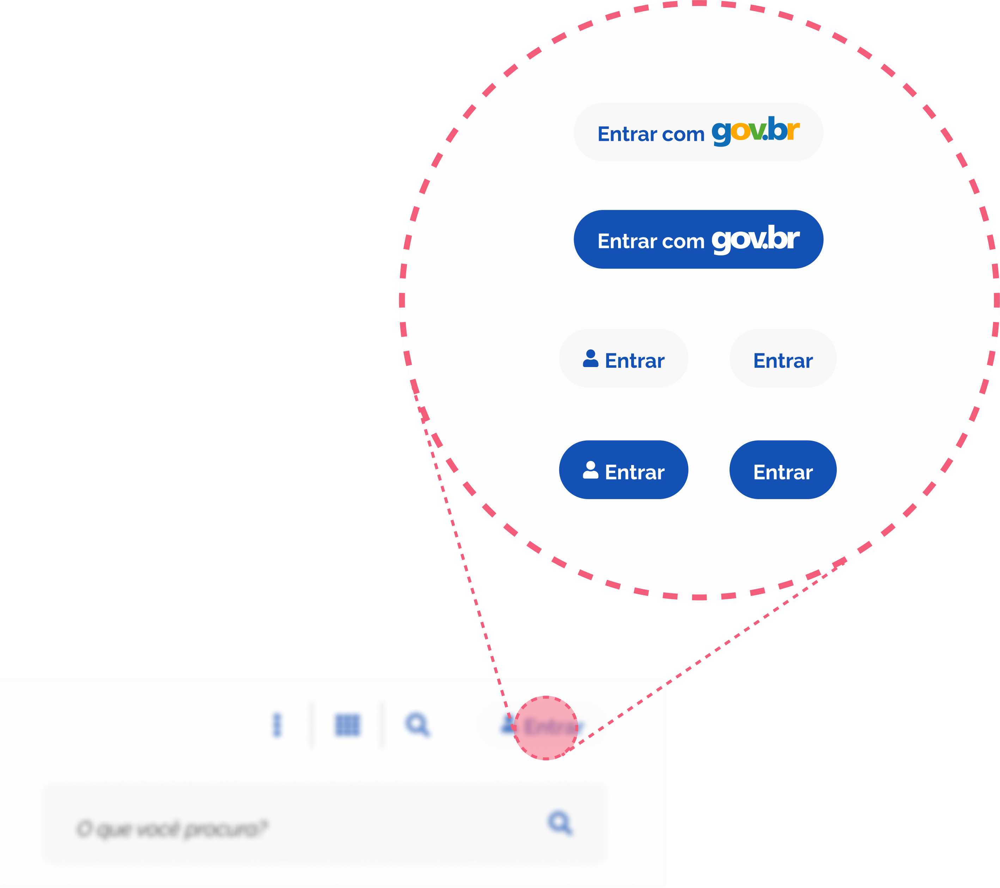
  </div>
  <div class="text-center py-5">
    <a class="br-button secondary" href="/components/signin">
      <i class="fas fa-arrow-right" aria-hidden="true"></i>
      <span class="ml-2">Conheça os Sign-In</span>
    </a>
  </div>
</section>

<section id="quem" class="mx-n1 mx-sm-n6 px-1 px-sm-5 pt-5">
  <div class="background"></div>
  <h2 class="text-up-05 text-sm-up-07 text-weight-light">
    Quem está utilizando?
  </h2>
  <div class="row">
    <div class="col-sm-5 order-12 order-sm-0 pt-5 pt-sm-0">
      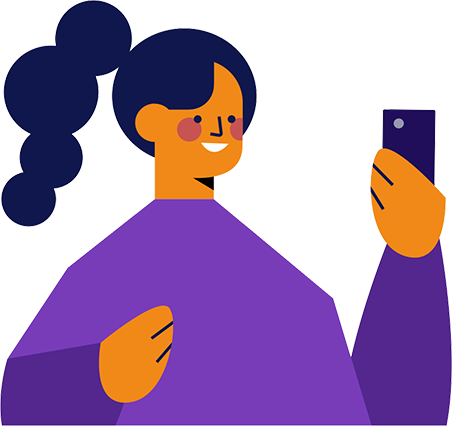
    </div>
    <div class="col-sm-7">
      <div class="d-none d-sm-block text-sm-right pt-sm-5">
        
      </div>
      <div class="d-sm-none text-center pb-5 px-5">
        
      </div>
      <div class="text-center text-sm-right py-5">
        <div class="d-sm-inline-block">
          <a class="br-button secondary" href="">
            Adicione seu serviço
          </a>
        </div>
        <div class="d-sm-inline-block mt-4 mt-sm-0 ml-sm-5">
          <a class="br-button secondary" href="">
            <i class="fas fa-plus" aria-hidden="true"></i>
            <span class="ml-2">Ver mais</span>
          </a>
        </div>
      </div>
    </div>
  </div>
</section>

<section id="duvidas" class="mx-n1 mx-sm-n6 px-1 px-sm-5 py-5">
  <div class="background"></div>
  <div class="row">
    <div class="col-sm">
      <h2 class="text-up-05 text-sm-up-07 text-weight-light">
        Dúvidas ou Informações
      </h2>
      <p class="text-up-01 text-sm-up-03">
        Para dúvidas, sugestões ou outras informações, entre em contato através do nosso e-mail:
      </p>
      <p class="text-up-02 text-sm-up-05 text-semi-bold">
        <a href="mailto:govbr-ds@serpro.gov.br">govbr-ds@serpro.gov.br</a>
      </p>
    </div>
    <div class="col-sm pt-5 text-sm-right pt-sm-0">
      
    </div>
  </div>
</section>
